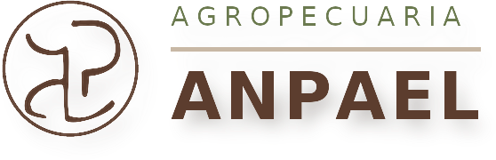

assets/logo-horizontal.png — versión horizontal en marrón con sombra, recortada al contenido (558×180). El original sin recortar está en assets/logo-horizontal-marron.png. El marrón vive sólo en el logotipo: no es un color de la paleta. Va sobre fondo blanco o sobre el gris #F5F7F5, nunca sobre monte hondo ni sobre foto. Cuando no cabe el logotipo (cabecera de la app, favicon), se usa el punto de 12px + ANPAEL en Karla bold: sobre fondo claro el punto es pasto-700, sobre monte hondo pasa a pasto-300.